The goal of gdalio is to read data direct with GDAL warp, with a simple configuration - specify the target grid once. This saves us from a lot of complication, juggling of formats, objects, and extra code.
We have these functions to easily read raster data via the GDAL warp library:
gdalio_data()read data directly from a data source name i.e. file path, url, or database connectiongdalio_set_default_grid()specify a grid (extent, dimension, projection) to use for all subsequent operationsgdalio_get_default_grid()get the grid currently in usevrt()simple function (not actually VRT, but doing similar in a limited way) to augment data sources that have missing or incorrect extent or projection metadatagdalio_matrix(),gdalio_array(), andgdalio_graphics()which reformat the data into commonly used R types for imagesgdalio_data_hex(),gdalio_data_rgb()special cases of gdalio_data() to read 3 or 4 bands, convert to text hex codesgdalio_local_grid()a helper to create a local projected region around a longlat (optional width extent, dimension, projection family)gdalio_format_source()a helper to print out the code you can run to define formatters for spatial package types (raster, stars, terra, spatstat).
In this readme we illustrate the use of these from some online and local raster data sources, and provide helpers for reading into particular formats used in R (base matrix, raster package, stars package, spatstat package, terra package).
Installation
You can install gdalio with:
#install.packages("remotes")
## currently need this branch to avoid dev problems in vapour
remotes::install_github("hypertidy/vapour@stable-2022")
remotes::install_github("hypertidy/gdalio")Target grid specification
Key is having a target grid, we nominate it upfront and then any data we request from GDAL will fill that grid by GDAL’s warp magic.
A grid is an abstract description of an image data set:
- extent
(xmin, xmax, ymin, ymax)in some coordinate system - dimension (number of columns, number of rows)
- projection - the actual coordinate system
Often we have an actual object in some format that records this information, but this can be much simpler by working with just 6 numbers and one character string.
Example
This works best for data you have access to locally, and in the simplest case you could use gdalio like this, but more nuanced use requires some effort to define the structure of the output data (which we explore below).
For a real example we use a file that’s on the internet and requires a little extra prep.
A sea surface temperature data set, we need GDAL’s subdataset syntax for a file at a URL and augment our file address with what we know is the projection of the data.
library(gdalio)
## online data, daily ocean temperature surface product, one layer in longlat 0.25 degree res
f <- vrt('NETCDF:"/vsicurl/https://www.ncei.noaa.gov/data/sea-surface-temperature-optimum-interpolation/v2.1/access/avhrr/201809/oisst-avhrr-v02r01.20180929.nc":sst',
projection = "+proj=longlat +datum=WGS84")
## we set up a grid (this is a *raster* in abstraction)
grid0 <- list(extent = c(-1e6, 1e6, -5e5, 5e5 ),
dimension = c(512, 256),
projection = "+proj=laea +lon_0=147 +lat_0=-42")
gdalio_set_default_grid(grid0)And now start reading data.
## then we get GDAL to get a value for every pixel in our grid
pix <- gdalio_data(f)
## we have a list vector for each band (just one here)
plot(pix[[1]], pch = ".")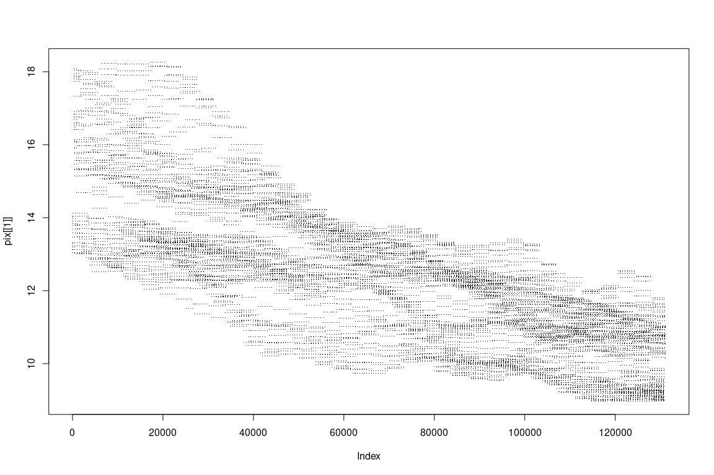
Those look a little simplified (it’s because we are asking for quite high resolution from a low resolution source). So let’s use a different resampling algorithm (default is nearest neighbour, no interpolation).
pix_interp <- gdalio_data(f, resample = "bilinear")
## use resampling we get quite a different result
plot(pix_interp[[1]], pch = ".")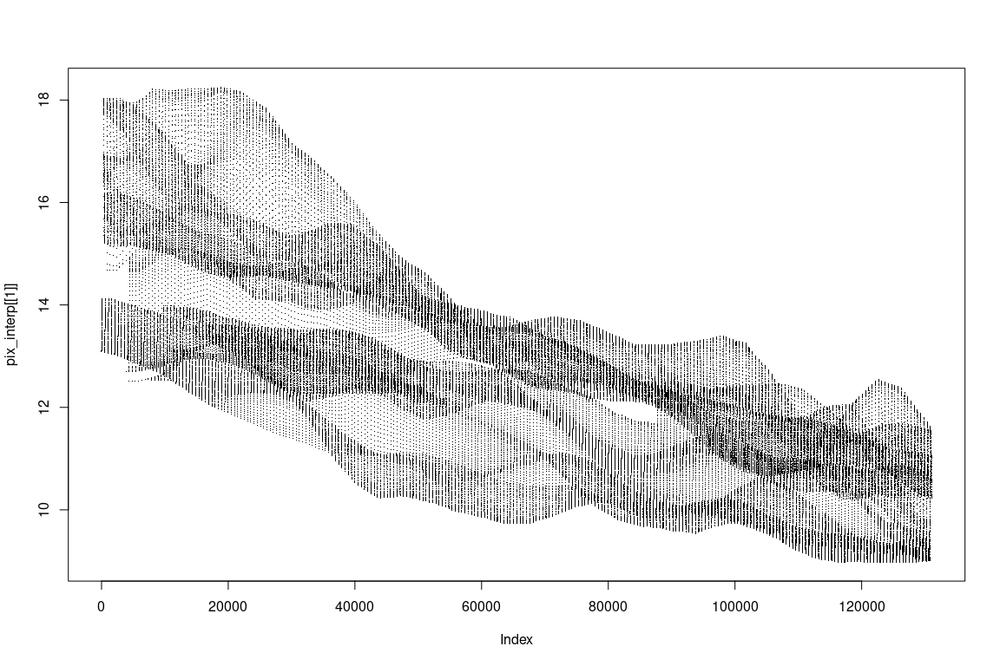
Normally of course we want a bit more convenience, and actually fill a format in R or some package that has spatial types. So we define those helpers here.
Raster formats
This function is equivalent to a number of others defined just below, to format the data into objects used by various packages.
## simple list format used by graphics::image() - we can only handle one band/layer
gdalio_base <- function(dsn, ...) {
v <- gdalio_data(dsn, ...)
g <- gdalio_get_default_grid()
list(x = seq(g$extent[1], g$extent[2], length.out = g$dimension[1]),
y = seq(g$extent[3], g$extent[4], length.out = g$dimension[2]),
z = matrix(v[[1]], g$dimension[1])[, g$dimension[2]:1])
}R for a long time had this powerful list(x,y,z) format for image():
xyz <- gdalio_base(f)
image(xyz)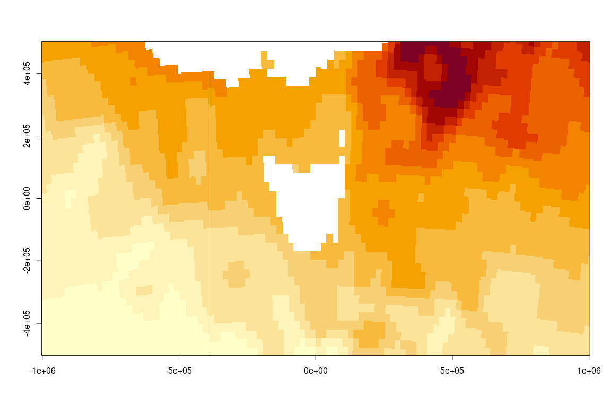
There are now several different formats used by various packages that are equivalent. At root they specify extent, dimension, projection the core concepts of our target grid (the less specialized ones ignore the projection). Some of these kinds of functions require those format-specific packages, but they are easy enough to write so we list these here as examples.
There are functions gdalio_matrix(), gdalio_array(), and gdalio_graphics() in this package that put the data into the native R image form.
## {spatstat.geom}
gdalio_im <- function(dsn, ..., band_output_type = "numeric") {
v <- gdalio_data(dsn, ..., band_output_type = band_output_type)
g <- gdalio_get_default_grid()
## can we have a list of im?
if (length(v) > 1) message("only returning one image layer im, for now")
m <- matrix(v[[1]], g$dimension[1])
spatstat.geom::im(t(m[,ncol(m):1]), xrange = g$extent[1:2], yrange = g$extent[3:4])
}
## {raster}
gdalio_raster <-
function(dsn, ..., band_output_type = "numeric") {
v <- gdalio_data(dsn, ..., band_output_type = band_output_type)
g <- gdalio_get_default_grid()
r <- raster::raster(raster::extent(g$extent), nrows = g$dimension[2], ncols = g$dimension[1], crs = g$projection)
if (length(v) > 1) {
r <- raster::brick(replicate(length(v), r, simplify = FALSE))
}
raster::setValues(r, do.call(cbind, v))
}
## {terra}
gdalio_terra <- function(dsn, ..., band_output_type = "numeric") {
v <- gdalio_data(dsn, ..., band_output_type = band_output_type)
g <- gdalio_get_default_grid()
r <- terra::rast(terra::ext(g$extent), nrows = g$dimension[2], ncols = g$dimension[1], crs = g$projection)
if (length(v) > 1) terra::nlyr(r) <- length(v)
terra::setValues(r, do.call(cbind, v))
}
## {stars}
gdalio_stars <- function(dsn, ..., band_output_type = "numeric") {
v <- gdalio_data(dsn, ..., band_output_type = band_output_type)
g <- gdalio_get_default_grid()
aa <- array(unlist(v, use.names = FALSE), c(g$dimension[1], g$dimension[2], length(v)))#[,g$dimension[2]:1, , drop = FALSE]
if (length(v) == 1) aa <- aa[,,1, drop = TRUE]
r <- stars::st_as_stars(sf::st_bbox(c(xmin = g$extent[1], ymin = g$extent[3], xmax = g$extent[2], ymax = g$extent[4])),
nx = g$dimension[1], ny = g$dimension[2], values = aa)
r <- sf::st_set_crs(r, g$projection)
r
}To obtain all of those functions you can do, but note the entire dependency requirement includes at least raster, stars, spatstat.geom, terra, so simply use the definitions as needed.
writeLines(gdalio_format_source())
#> source(system.file("raster_format/raster_format.codeR", package = "gdalio", mustWork = TRUE))Note that for each format there is nothing of consequence that is different, from the perspective of gdalio they all take the same set of pixel values, there are just tiny differences in how the extent and projection metadata are handled, and in storage orientation for the data itself.
To prove the point we now read the same data but into our format of choice. We are re-reading data here (it all exists in pix above, but you get the idea).
op <- par(mfrow = c(2, 2))
#plot(matrix(g$extent, ncol = 2), type = "n", asp = 1, xlab = "x", ylab = "y", main = "stars")
image(gdalio_stars(f), main = "stars")
#> Registered S3 methods overwritten by 'stars':
#> method from
#> st_bbox.SpatExtent sf
#> st_bbox.SpatRaster sf
#> st_bbox.SpatVector sf
#> st_crs.SpatRaster sf
#> st_crs.SpatVector sf
raster::plot(gdalio_raster(f), col = hcl.colors(26), main = "raster")
terra::plot(gdalio_terra(f), main = "terra")
plot(gdalio_im(f), main = "\nspatstat")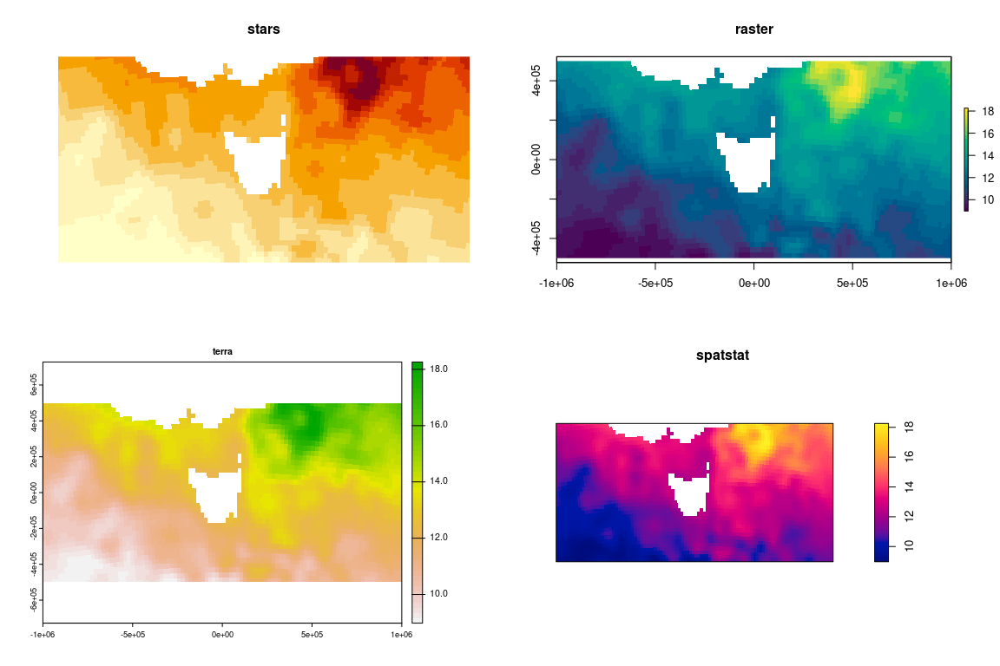
par(op)Resampling algorithm
In the same way, we can also use different methods of resampling and easily see the effect.
op <- par(mfrow = c(2, 2), mar = par("mar")/3)
image(cs <- gdalio_stars(f, resample = "cubicspline"), col = hcl.colors(26))
image(lz <- gdalio_stars(f, resample = "near"), col = hcl.colors(26))
image(cs - lz)
par(op)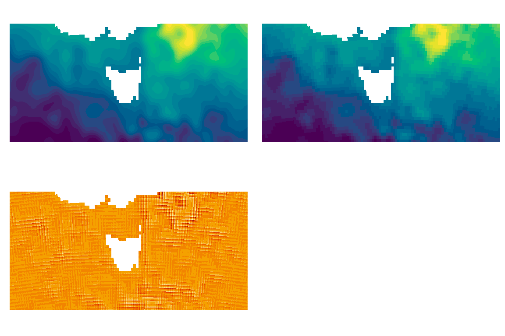
Imagery
This works as well for online image sources (like photos or street maps).
virtualearth_imagery <- tempfile(fileext = ".xml")
writeLines('<GDAL_WMS>
<Service name="VirtualEarth">
<ServerUrl>http://a${server_num}.ortho.tiles.virtualearth.net/tiles/a${quadkey}.jpeg?g=90</ServerUrl>
</Service>
<MaxConnections>4</MaxConnections>
<Cache/>
</GDAL_WMS>', virtualearth_imagery)
img <- gdalio_raster(virtualearth_imagery, bands = 1:3)
raster::plotRGB(img)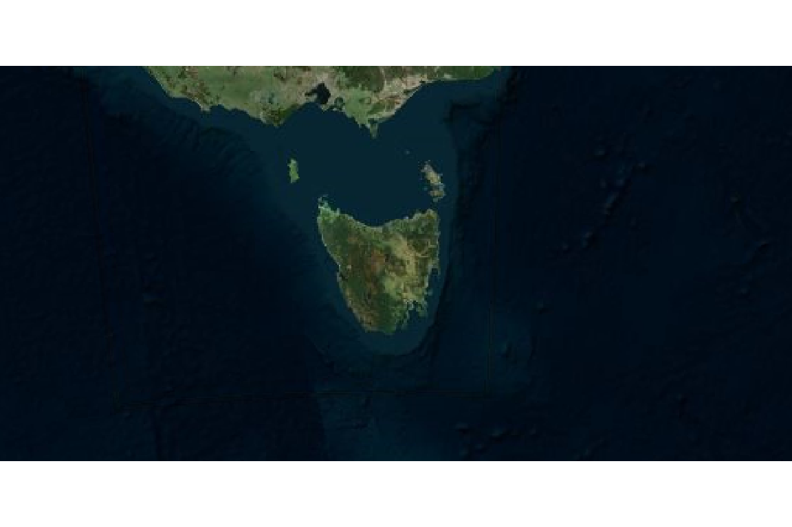
## let's really zoom in on somewhere cool
grid1 <- list(extent = c(-1, 1, -1, 1) * 2e3,
dimension = c(512, 512),
projection = "+proj=laea +lon_0=147.325 +lat_0=-42.880556")
gdalio_set_default_grid(grid1)
img <- gdalio_raster(virtualearth_imagery, bands = 1:3)
raster::plotRGB(img)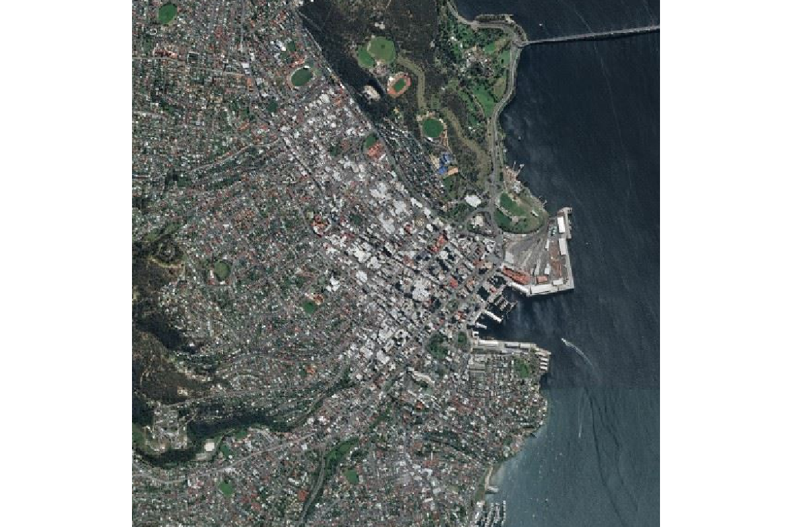
To obtain the raw data values we can use gdalio_data_rgb() or gdalio_data_hex() without specifying the number of bands, but these are a little experimental for now.
rgbvals <- gdalio_data_rgb(virtualearth_imagery)
hexvals <- gdalio_data_hex(virtualearth_imagery)We can use this to drive R’s own raster type, the grDevices::as.raster() array.
arr <- gdalio_graphics(virtualearth_imagery)
grid1 <- gdalio_get_default_grid()
plot(matrix(grid1$extent, 2), type = "n", asp = 1)
graphics::rasterImage(arr, grid1$extent[1], grid1$extent[3], grid1$extent[2], grid1$extent[4])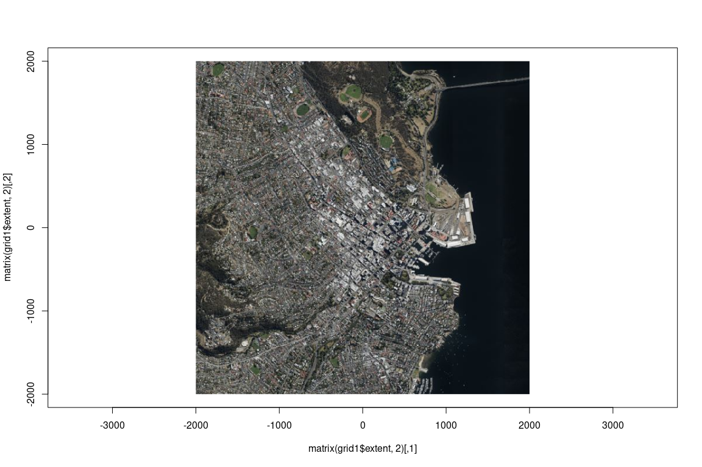
Using R itself we can plot() but we must use a different idiom for the extent.
Don’t use plot(arr, xlim = ,ylim = ) it does not work as claimed we can only get sensible extents at R version 4.1.0 with rasterImage().
plot(arr)
par("usr")
#> [1] -191.1688 703.1688 0.0000 512.0000Another great example off twitter.
u <- "WMS:https://tiles.maps.eox.at/?SERVICE=WMS&VERSION=1.1.1&REQUEST=GetMap&LAYERS=s2cloudless-2019&SRS=EPSG:4326&BBOX=-180.000000,-90.000000,180.000000,90.000000&FORMAT=image/png&TILESIZE=256&OVERVIEWCOUNT=17&MINRESOLUTION=0.0000053644180298&TILED=true"
library(gdalio) ## https://github.com/hypertidy/gdalio
gdalio_set_default_grid(list(extent = c(-1, 1, -1, 1) * 1e6,
dimension = c(1024, 1024),
projection = "+proj=laea +lon_0=139 +lat_0=39"))
x <- gdalio_graphics(u)
plot(x)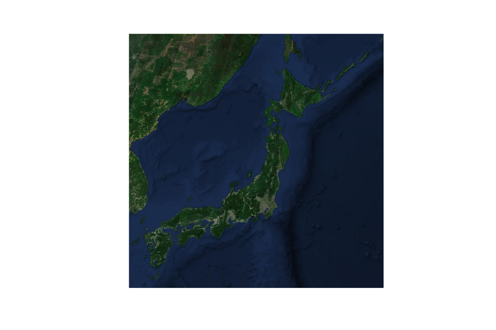
Default grid (there is one)
Say we don’t set a grid at all, just go a default. Currently gdalio has a default for an entire world longlat grid. This means we can read from any source and we’ll get something (though we might not see anything if the source is a tiny region).
gdalio_set_default_grid()
terra::plot(gdalio_terra(f))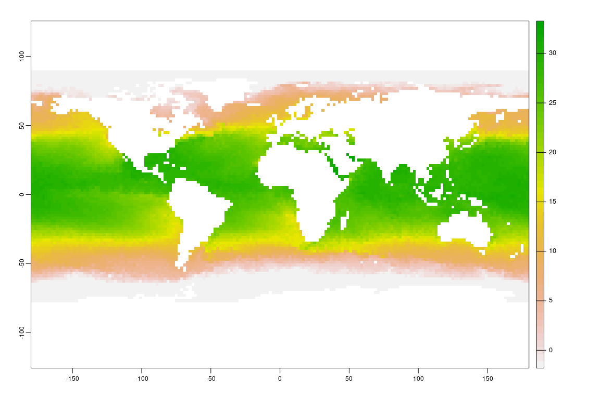
Miscellaneous
Some sources, files in spData, image servers, etc.
elevation.tiles.prod <- tempfile(fileext = ".xml")
writeLines('<GDAL_WMS>
<Service name="TMS">
<ServerUrl>https://s3.amazonaws.com/elevation-tiles-prod/geotiff/${z}/${x}/${y}.tif</ServerUrl>
</Service>
<DataWindow>
<UpperLeftX>-20037508.34</UpperLeftX>
<UpperLeftY>20037508.34</UpperLeftY>
<LowerRightX>20037508.34</LowerRightX>
<LowerRightY>-20037508.34</LowerRightY>
<TileLevel>14</TileLevel>
<TileCountX>1</TileCountX>
<TileCountY>1</TileCountY>
<YOrigin>top</YOrigin>
</DataWindow>
<Projection>EPSG:3857</Projection>
<BlockSizeX>512</BlockSizeX>
<BlockSizeY>512</BlockSizeY>
<BandsCount>1</BandsCount>
<DataType>Int16</DataType>
<ZeroBlockHttpCodes>403,404</ZeroBlockHttpCodes>
<DataValues>
<NoData>-32768</NoData>
</DataValues>
<Cache/>
</GDAL_WMS>', elevation.tiles.prod)
## we'll use this as a grid specification, not the actual data for anything
sfiles <- list.files(system.file("raster", package = "spDataLarge", mustWork = TRUE), full.names = TRUE)
## we don't take raster objects, just the spec: extent, dim, projection
ri <- vapour::vapour_raster_info(sfiles[1])
gdalio_set_default_grid(list(extent = ri$extent,
dimension = ri$dimXY,
projection = ri$projection))
s <- gdalio_stars(elevation.tiles.prod)
library(stars); plot(s)
#> Loading required package: abind
#> Loading required package: sf
#> Linking to GEOS 3.10.1, GDAL 3.4.0, PROJ 8.2.0; sf_use_s2() is TRUE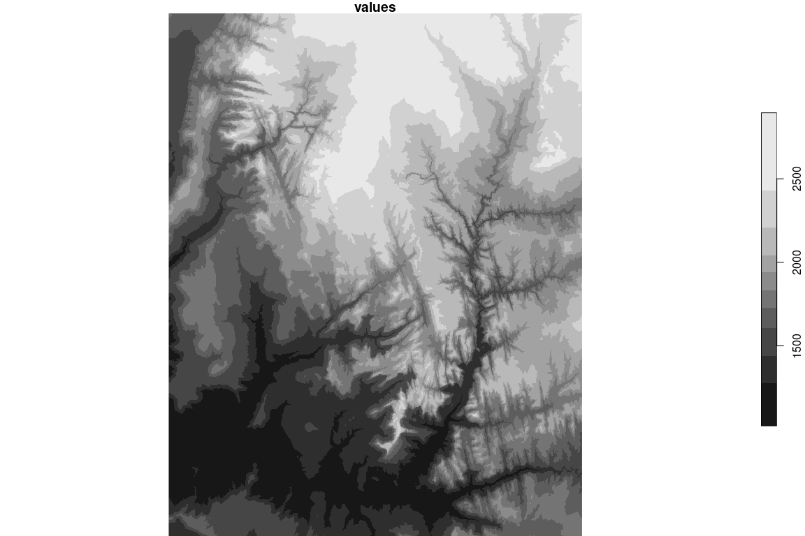
## we can do this anywhere, in any projection but it depends on what our source *has* of course
## but, it's pretty general and powerful
gdalio_set_default_grid(list(extent = c(-1, 1, -1, 1) * 3e6,
dimension = c(768, 813),
projection = "+proj=stere +lat_0=-65 +lon_0=147"))
p <- gdalio_im(elevation.tiles.prod)
plot(p)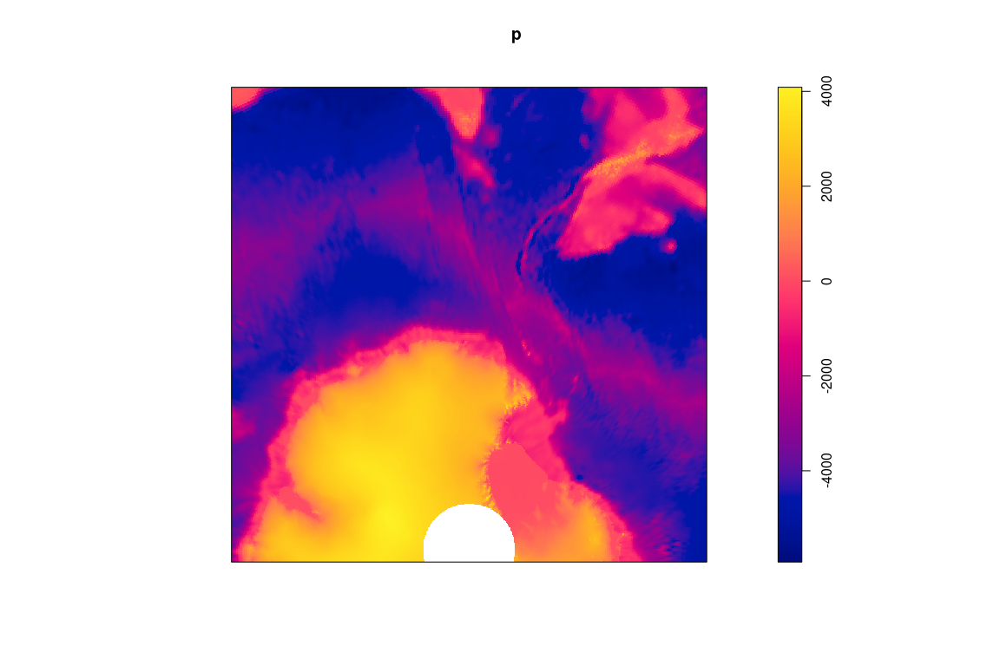
My favourite projection family (I think) is Oblique Mercator. For a long time I’ve wanted this kind of freedom and convenience for working with spatial data … rather than constantly juggling objects and formats and plumbing, more to come. :)
omerc <- "+proj=omerc +lonc=147 +gamma=9 +alpha=9 +lat_0=-10 +ellps=WGS84"
gdalio_set_default_grid(list(extent = c(-1, 1, -1, 1) * 7e6,
dimension = c(768, 813),
projection = omerc))
o <- gdalio_raster(elevation.tiles.prod)
raster::plot(o, col = hcl.colors(52))
xy <- reproj::reproj(raster::coordinates(o), "+proj=longlat", source = raster::projection(o))
xy[xy[,1] < 0, 1] <- xy[xy[,1] < 0, 1] + 360
library(raster)
#> Loading required package: sp
contour(raster::setValues(o, xy[,1]), add = TRUE, col = "white")
contour(setValues(o, xy[,2]), add = TRUE, col = "white")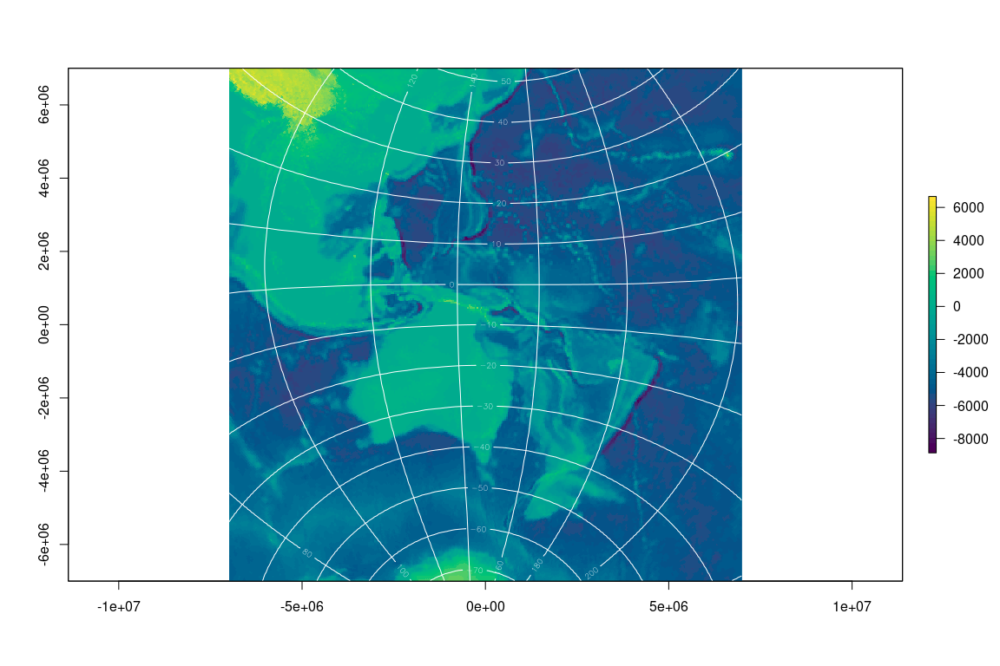
The fun part is I can now change the source, I’ve already set up the map I want and I can simply ask for a new set of pixels. The topography data happens to be in Mercator from a tiled and level of detail image service, while the SST is from a model output format (NetCDF) at a single resolution. GDAL doesn’t care! Let’s make them the same:
sst <- gdalio_raster(f)
raster::plot(sst, col = palr::sst_pal(26))
contour(setValues(o, xy[,1]), add = TRUE, col = "white")
contour(setValues(o, xy[,2]), add = TRUE, col = "white")
contour(o, add = TRUE, labels = "", col = "black", levels = seq(0, 4500, by = 500))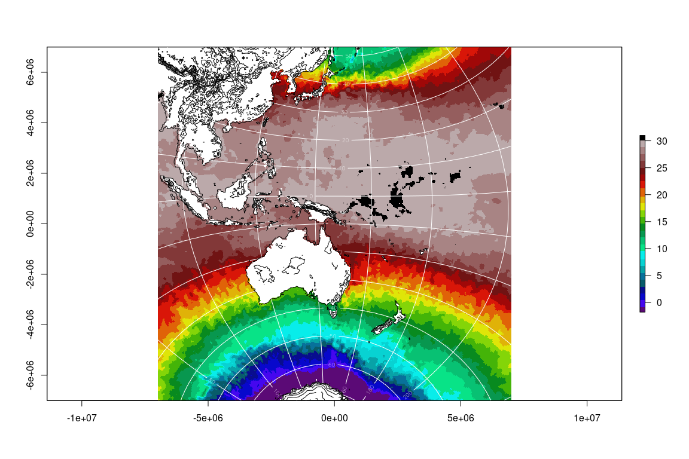
Code of Conduct
Please note that the gdalio project is released with a Contributor Code of Conduct. By contributing to this project, you agree to abide by its terms.